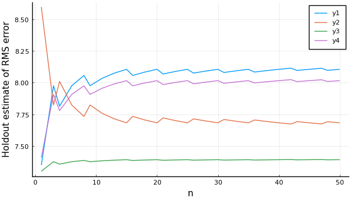

Learning Curves
A learning curve in MLJ is a plot of some performance estimate, as a function of some model hyperparameter. This can be useful when tuning a single model hyperparameter, or when deciding how many iterations are required for some iterative model. The learning_curve method does not actually generate a plot, but generates the data needed to do so.
To generate learning curves you can bind data to a model by instantiating a machine. You can choose to supply all available data, as performance estimates are computed using a resampling strategy, defaulting to Holdout(fraction_train=0.7).
using MLJ
X, y = @load_boston;
atom = (@load RidgeRegressor pkg=MLJLinearModels)()
ensemble = EnsembleModel(model=atom, n=1000)
mach = machine(ensemble, X, y)
r_lambda = range(ensemble, :(model.lambda), lower=1e-1, upper=100, scale=:log10)
curve = MLJ.learning_curve(mach;
range=r_lambda,
resampling=CV(nfolds=3),
measure=MeanAbsoluteError())(parameter_name = "model.lambda", parameter_scale = :log10, parameter_values = [0.1, 0.12689610031679222, 0.16102620275609392, 0.20433597178569418, 0.25929437974046676, 0.3290344562312668, 0.41753189365604015, 0.5298316906283709, 0.6723357536499337, 0.8531678524172808 … 11.7210229753348, 14.87352107293511, 18.873918221350976, 23.95026619987486, 30.391953823131978, 38.56620421163473, 48.93900918477494, 62.10169418915616, 78.80462815669912, 100.0], measurements = [6.602045244188644, 6.561177127509054, 6.491764697458604, 6.358455280917016, 6.2219851984414944, 6.081292996216969, 5.960323489805503, 5.783126251373872, 5.598308185774324, 5.43164436273311 … 4.792565574071091, 4.911144982385355, 5.031127497735947, 5.182514320682574, 5.350666955609704, 5.544994831336472, 5.754714417109406, 5.927610848291631, 6.107438348736913, 6.303621146147894],)
using Plots
plot(curve.parameter_values,
curve.measurements,
xlab=curve.parameter_name,
xscale=curve.parameter_scale,
ylab = "CV estimate of RMS error")
In the case the range hyperparameter is the number of iterations in some iterative model, learning_curve will not restart the training from scratch for each new value, unless a non-holdout resampling strategy is specified (and provided the model implements an appropriate update method). To obtain multiple curves (that are distinct) you will need to pass the name of the model random number generator, rng_name, and specify the random number generators to be used using rngs=... (an integer automatically generates the number specified):
atom.lambda= 7.3
r_n = range(ensemble, :n, lower=1, upper=50)
curves = MLJ.learning_curve(mach;
range=r_n,
measure=MeanAbsoluteError(),
verbosity=0,
rng_name=:rng,
rngs=4)(parameter_name = "n", parameter_scale = :linear, parameter_values = [1, 3, 4, 6, 8, 9, 11, 13, 15, 16 … 35, 36, 38, 40, 42, 43, 45, 47, 48, 50], measurements = [6.267086768364965 9.016551323507677 8.693213673337342 6.6284243276381645; 7.076439307404187 8.128349359638042 8.372305838710082 7.499646480481914; … ; 7.260210746446452 7.97999778580648 8.314419022423824 7.683557093865239; 7.272776254468539 7.970107680884375 8.310567563409217 7.695817801424128],)
plot(curves.parameter_values,
curves.measurements,
xlab=curves.parameter_name,
ylab="Holdout estimate of RMS error")
API reference
MLJTuning.learning_curve — Functioncurve = learning_curve(mach; resolution=30,
resampling=Holdout(),
repeats=1,
measure=default_measure(machine.model),
rows=nothing,
weights=nothing,
operation=nothing,
range=nothing,
acceleration=default_resource(),
acceleration_grid=CPU1(),
rngs=nothing,
rng_name=nothing)Given a supervised machine mach, returns a named tuple of objects suitable for generating a plot of performance estimates, as a function of the single hyperparameter specified in range. The tuple curve has the following keys: :parameter_name, :parameter_scale, :parameter_values, :measurements.
To generate multiple curves for a model with a random number generator (RNG) as a hyperparameter, specify the name, rng_name, of the (possibly nested) RNG field, and a vector rngs of RNG's, one for each curve. Alternatively, set rngs to the number of curves desired, in which case RNG's are automatically generated. The individual curve computations can be distributed across multiple processes using acceleration=CPUProcesses() or acceleration=CPUThreads(). See the second example below for a demonstration.
X, y = @load_boston;
atom = @load RidgeRegressor pkg=MultivariateStats
ensemble = EnsembleModel(atom=atom, n=1000)
mach = machine(ensemble, X, y)
r_lambda = range(ensemble, :(atom.lambda), lower=10, upper=500, scale=:log10)
curve = learning_curve(mach; range=r_lambda, resampling=CV(), measure=mav)
using Plots
plot(curve.parameter_values,
curve.measurements,
xlab=curve.parameter_name,
xscale=curve.parameter_scale,
ylab = "CV estimate of RMS error")If using a Holdout() resampling strategy (with no shuffling) and if the specified hyperparameter is the number of iterations in some iterative model (and that model has an appropriately overloaded MLJModelInterface.update method) then training is not restarted from scratch for each increment of the parameter, ie the model is trained progressively.
atom.lambda=200
r_n = range(ensemble, :n, lower=1, upper=250)
curves = learning_curve(mach; range=r_n, verbosity=0, rng_name=:rng, rngs=3)
plot!(curves.parameter_values,
curves.measurements,
xlab=curves.parameter_name,
ylab="Holdout estimate of RMS error")
learning_curve(model::Supervised, X, y; kwargs...)
learning_curve(model::Supervised, X, y, w; kwargs...)Plot a learning curve (or curves) directly, without first constructing a machine.
Summary of key-word options
resolution- number of points generated fromrange(number model evaluations); default is30acceleration- parallelization option for passing toevaluate!; an instance ofCPU1,CPUProcessesorCPUThreadsfrom theComputationalResources.jl; default isdefault_resource()acceleration_grid- parallelization option for distributing each performancde evaluationrngs- for specifying random number generator(s) to be passed to the model (see above)rng_name- name of the model hyper-parameter representing a random number generator (see above); possibly nested
Other key-word options are documented at TunedModel.